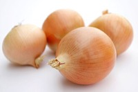

たまねぎ（玉葱）の生産量 都道府県ランキング
全25県の順位と、とれた量
たまねぎが日本でいちばん多くとれるのは北海道です。75万2,600 tで、全国（112万6,000 t）の67%を占めます。

| 順位 | 都道府県 | 収穫量 | 全国に占める割合 |
|---|---|---|---|
| 1位 | 北海道 | 75万2,600 t | 67% |
| 2位 | 佐賀県 | 8万2,000 t | 7.3% |
| 3位 | 兵庫県 | 7万7,600 t | 6.9% |
| 4位 | 長崎県 | 2万8,500 t | 2.5% |
| 5位 | 愛知県 | 2万2,400 t | 2.0% |
| 6位 | 静岡県 | 1万5,000 t | 1.3% |
| 7位 | 熊本県 | 1万400 t | 0.9% |
| 8位 | 香川県 | 9,640 t | 0.9% |
| 9位 | 栃木県 | 8,690 t | 0.8% |
| 10位 | 群馬県 | 8,250 t | 0.7% |
| 11位 | 富山県 | 7,900 t | 0.7% |
| 12位 | 愛媛県 | 7,230 t | 0.6% |
| 13位 | 岡山県 | 6,590 t | 0.6% |
| 14位 | 千葉県 | 6,040 t | 0.5% |
| 15位 | 埼玉県 | 5,070 t | 0.5% |
| 16位 | 山口県 | 4,620 t | 0.4% |
| 17位 | 茨城県 | 4,510 t | 0.4% |
| 18位 | 長野県 | 4,130 t | 0.4% |
| 19位 | 福岡県 | 3,640 t | 0.3% |
| 20位 | 和歌山県 | 3,550 t | 0.3% |
| 21位 | 島根県 | 3,470 t | 0.3% |
| 22位 | 大阪府 | 3,170 t | 0.3% |
| 23位 | 福島県 | 2,750 t | 0.2% |
| 24位 | 岐阜県 | 2,390 t | 0.2% |
| 25位 | 三重県 | 2,340 t | 0.2% |
この数字について
- 分類：ヒガンバナ科
- 全国の収穫量：112万6,000 t
- この数字が表すもの：収穫量（畑や田でとれた重さ）
- 調査：作物統計調査 作況調査（野菜） 令和6年産
- 25県分を調査（調査していない県は順位に入りません）
たまねぎの生産量について、よくある質問
- たまねぎの生産量が日本一の都道府県はどこですか？
- 北海道です。作物統計調査 作況調査（野菜）（令和6年産）で75万2,600 tでした。
- たまねぎの生産量ランキング2位・3位はどこですか？
- 2位は佐賀県（8万2,000 t）、3位は兵庫県（7万7,600 t）です。
- たまねぎの生産量ランキング4位・5位はどこですか？
- 4位は長崎県（2万8,500 t）、5位は愛知県（2万2,400 t）です。たまねぎの全25県の順位は上の表のとおりです。
- たまねぎの全国の生産量はどれくらいですか？
- 112万6,000 t（令和6年産）です。